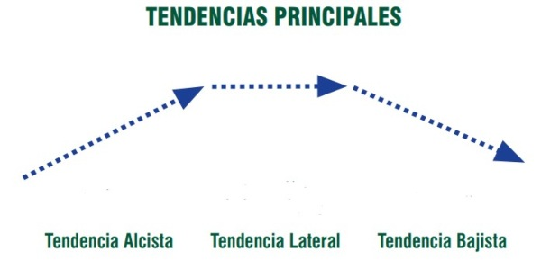
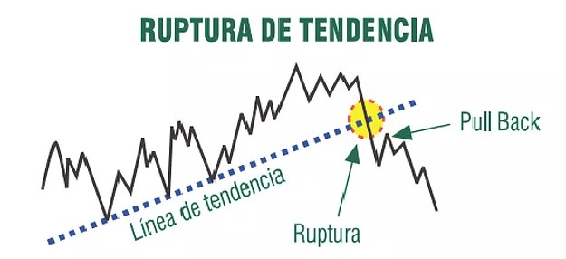
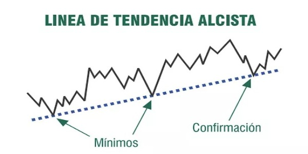
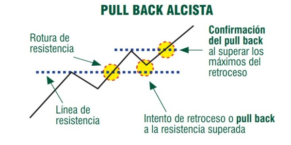

¿Qué es el chartismo?
Chartismo proviene de la palabra inglesa “chart” y significa gráfico. El chartismo consiste básicamente en el estudio de los gráficos. El chartista usa los gráficos para su análisis, utiliza el precio y ningún otro instrumento. Se diferencia del analista técnico en que este último usa más herramientas para la toma de decisiones como por ejemplo medias móviles o indicadores. Por tanto, el chartismo es el estudio de los gráficos basándose solamente en el precio.
Como norma general podemos decir que todos los analistas técnicos son chartistas, pero no todos los chartistas son analistas técnicos.
Este manual tiene como objetivo aprender a identificar y determinar los principales elementos del chartismo, veremos de manera simple y detallada que son las tendencias, los canales, los soportes, las resistencias, las principales figuras chartistas, los pullbacks y los gaps, así como su interpretación de cada una de ellas para poder tomar de decisiones de inversión.
LAS TENDENCIAS
Si observamos las cotizaciones de los precios en un gráfico vemos que se mueven por tendencias. Nos encontramos con una tendencia cuando durante un periodo de tiempo las cotizaciones de un activo determinado tienden a seguir una dirección ascendente o descendente. Si la trayectoria es ascendente nos encontramos delante de una tendencia alcista, si por el contrario la trayectoria es descendente, estamos ante en una tendencia bajista.
Puede que durante un periodo concreto el precio no muestre una trayectoria ni ascendente ni descendente, si ocurre esta situación nos encontramos ante una fase lateral o sin tendencia.
Determinar la tendencia para tomar decisiones de inversión es básico, es quizá uno de los aspectos más importantes para poder invertir. Antes de tomar alguna posición larga o corta en el mercado tenemos que saber en qué tendencia se encuentra el activo en cuestión, nunca abriremos una posición corta en una tendencia alcista ni larga en una tendencia bajista. Si el activo se encuentra en una fase lateral mejor no invertir, desestimaremos ese activo y buscaremos otro que se encuentre en tendencia.
"Falsa ruptura":
El activo supera la Linea de tendencia, pero no logra confirmar la ruptura, y vuelve a su tendencia actual."Ruptura y rebote de confirmación":
El activo supera eficientemente la tendencia, y busca rebotar en la linea confirmando la ruptura y cambiando su tendencia actual, este rebote de confirmación puede ser un"Pullback" o un "Throwback"Tendencias del trading

"Ruptura de linea de tendencia":

Directriz alcista
Una directriz alcista es la línea que une los mínimos que forman las cotizaciones en una tendencia alcista. Es la línea que une los mínimos que forman los valles de las cotizaciones, se tiene que trazar siempre por debajo uniendo los mínimos ascendentes. Es muy importante saber cuándo se ha roto la directriz alcista ya que en ese momento los precios comenzaran a descender. Para estar seguros de que la directriz se ha roto tenemos que dar un margen al precio, ya que muchas veces se producen roturas falsas y el precio continúa ascendiendo.
"Pullback":
Cuando el activo hace una ruptura a la baja, es decir, cambia su tendencia de Alcista a Bajista, primero rompe la tendencia, y luego vuelve a tocar la linea para seguir a la baja, confirmando el cambio de tendencia. Este es el momento de VENTA (Posicionarse Bajista).
Linea de tendencia alcista

Ruptura de tendencia alcista

Directriz bajista
Una directriz bajista es la línea que une los máximos consecutivos cada vez más bajos que forman las cotizaciones. Al igual que el caso anterior es muy importante conocer cuando se ha roto la directriz ya que los precios tendrán tendencia a subir. Para estar seguros que se ha roto la directriz tenemos que dar un margen de movimiento al precio para evitar roturas falsas.
"Throwback o Pullback Bajista":
Cuando el activo hace una ruptura al alza, es decir, cambia su tendencia de Bajista a Alcista, primero rompe la tendencia, y luego vuelve a tocar la linea para seguir al alza, confirmando el cambio de tendencia. Este es el momento optimo de COMPRA (Posicionarse Alcista).

Los canales
Un canal es el espacio comprendido entre una directriz y su paralela por el que oscila el precio. Si es un canal alcista tendremos un canal ascendente y si es bajista tendremos un canal descendente. En los canales alcistas y bajistas la directriz que marca tendencia es siempre la línea que queda a la derecha.
Al igual que ocurre con las directrices, cuanto más tiempo y más impactos se produzcan a ambos lados del canal más fiabilidad e importancia tendrá.
Soportes y resistencias
Un soporte se produce en el momento en que el precio para su caída en un lugar concreto dentro de una tendencia bajista. En este punto la demanda de títulos es mayor que la oferta y frena su caída. Para considerar que se ha roto el soporte tenemos que dar un margen de maniobra al precio para evitar roturas falsas.
Una resistencia es un nivel de cotización en que el precio tiende a pararse dentro de una tendencia alcista. Es el punto en que la oferta de títulos frena la subida y pueden iniciarse caídas en las cotizaciones. Para considerar que la resistencia ha sido rota tenemos que dar un pequeño margen de maniobra al precio ya que muchas veces se producen roturas falsas.
Características comunes a los soportes y las resistencias:
- Una vez han sido superadas tienden a intercambiar su papel. El soporte pasa a ser resistencia y la resistencia pasa a ser soporte.
- Los niveles que actúan como soporte y resistencia son niveles psicológicos muy importantes para los inversores.
- Cuanto mayor sea el número de veces que la línea frena la cotización más importante es. A partir de dos puntos de apoyo ya podemos tener un soporte o una resistencia, aunque es más recomendable tener tres puntos de contacto.
- Es muy difícil encontrar niveles exactos, la importancia de éstos niveles la encontramos en la zona en que se producen. Por ejemplo, el Ibex lleva mucho tiempo tocando los 10.000 puntos en tendencia alcista se considerará una resistencia aunque sus puntos de parada no sean exactamente los 10.000 puntos.
TITULO DEL TEMA
Contenido de la pagina.

TITULO DEL TEMA
Contenido de la pagina.
TITULO DEL TEMA
Contenido de la pagina.
TITULO DEL TEMA
Contenido de la pagina.
TITULO DEL TEMA
Contenido de la pagina.
TITULO DEL TEMA
Contenido de la pagina.
TITULO DEL TEMA
Contenido de la pagina.
TITULO DEL TEMA
Contenido de la pagina.